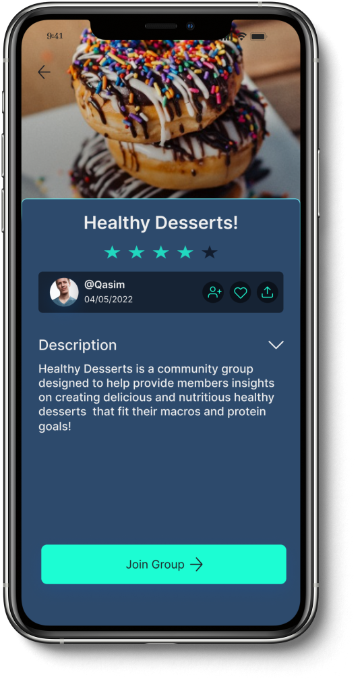
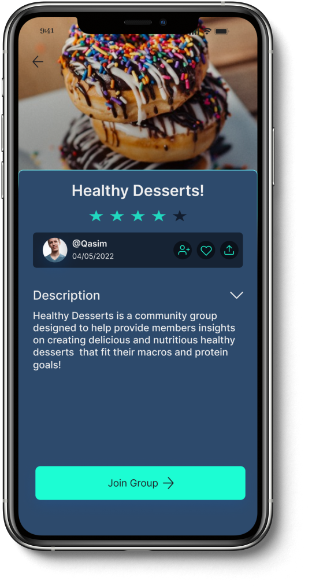

GrowthHub
A self-improvement app that creates a more personalized experience for different users.
 



Problem:
Numerous self-improvement applications focus on aspects like goal setting and meditation, but they often lack a sense of community that can offer solace to individuals who may experience feelings of loneliness during their journey of personal growth.
Solution:
Develop a platform dedicated to self-improvement, providing a vibrant hub where individuals on their personal growth journey can connect with one another in real-time. This platform would enable them to share their experiences, exchange valuable tips and tricks, and ultimately feel a stronger sense of community, alleviating the sense of loneliness often associated with self-improvement endeavors.
Research
Research Methods:
Competitor Analysis:
Numerous self-improvement applications focus on aspects like goal setting and meditation, but they often lack a sense of community that can offer solace to individuals who may experience feelings of loneliness during their journey of personal growth.
Research Takeaways:
Develop a platform dedicated to self-improvement, providing a vibrant hub where individuals on their personal growth journey can connect with one another in real-time. This platform would enable them to share their experiences, exchange valuable tips and tricks, and ultimately feel a stronger sense of community, alleviating the sense of loneliness often associated with self-improvement endeavors.